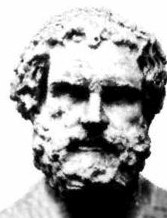
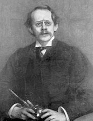
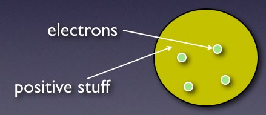

The development of the atomic model
I LOVE THIS story. It is a story of how ideas changed about the nature of the atom. These are the notes (and diagrams) I use when I teach the atomic nature of matter to non-science majors. The best thing about this story is that it is a great example of science. Science (or scientists) build a model. If new evidence comes along, the model gets changed. There are several other websites that describe all of this stuff, I will list a couple at the end of this post.
Typical textbook model of an atom

- The atom is made of protons, neutrons and electrons
- Most of the space is taken up by the area where the electrons exist
- The protons and neutrons are in the core of the atom – called the nucleus
Greek Model of the Atom
It always has to go back to the Greeks, doesn’t it? Well, they did do a lot of stuff. I know they were really scientists but it is still a good place to start. Here is a picture of bust of Democritus.

In real life, he probably had color. Democritus is credited with coming up with the atom. The question was, what would happen if you keep taking something (like a tree) and breaking into smaller and smaller pieces? Would it always be a piece of a tree? Could you keep breaking it into smaller and smaller pieces? Democritus said that if you keep breaking it down, you would get to a size that could no longer be broken. This would be the indivisible piece. In Greek, atomos = indivisible. Thus, the atom. (I know there is more to the Greeks, but I need a place to start)
Dalton’s Model

- Stuff can be broken into elements (the things listed on the periodic table).
- Elements are atoms with different masses.
- Compounds are a combinations of elements. You know, like water, salt or pizza.
J. Jonah Jameson Thomson – (AKA J.J.)

